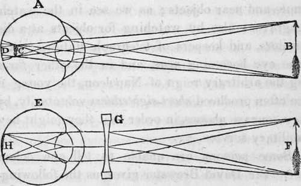

The Sense Of Sight. Part 6
Description
This section is from the book "Human Physiology For The Use Of Elementary Schools", by Charles Alfred Lee. Also available from Amazon: Human Physiology, for the Use of Elementary Schools.
The Sense Of Sight. Part 6
30. It follows then, that the eye itself does not see ; it is only an instrument employed by the brain, or rather the mind, whose servant the brain is. The optic nerve is the channel by which the mind peruses the hand writing of nature on the retina, and through which it transfers to that material tablet its decisions and its creations. There is then a portion, or rather an organ of the brain, where vision or the mind's eye is seated ; and this portion is sometimes imperfectly constituted or organized, as Gall has proved to be the case, in those who cannot distinguish colours. That such is a true statement of facts, we learn from observing that disease of a given portion of brain produces blindness, whilst the eye remains perfectly healthy. Either this was the case with Milton, or he was afflicted with amaurosis, or palsy of the retina, for he says,
" These eyes, though clear To outward view, of blemish, or of spot,
Bereft of light, their seeing have forgot!
Nor to their idle orbs doth sight appear
Of sun, or moon, or star throughout the year!"
We also have the power of internal vision when asleep ; and those who have lost their eyes perceive spectral illusions, and other similar phenomena, and they can also conjure up the figures and forms of various objects familiar to them before they lost their vision.
31. From the principles now laid down we can understand why rivers appear shallower than they are, and why a stick placed in the water appears crooked. In spearing of fish, or shooting them in the water, every sportsman knows that he must make suitable allowance for this refraction, for the fish is always nearer to him than it appears. Birds that dive for fish seem to understand that there is but small chance of success if they dive obliquely into the water, so like skilful opticians, they hover over, and when they see their prey, dart down perpendicularly, in which direction, as we have seen, there is no refraction. There is a curious fish in the East India waters called chactodon, about eight inches long, that appears to understand optics remarkably well. When it sees a fly, sitting on the plants that grow in shallow water, it swims within five or six feet, and then with the dexterity of a practical marksman, ejects from its tubular mouth a single drop of water which never fails to strike the fly into the sea, where it soon becomes its prey. Dunglison states that Hommel, the Dutch governor, put some of these fish into a tub of water, and then pinned a fly on a stick within their reach. He daily saw the fish shoot at the fly, and they never failed to hit their mark.
32. Short Sightedness
This generally arises from too great convexity of the cornea, or excessive density in the structure of the crystalline lens; either of which will cause the visual rays from near objects, to converge to a focus, before they reach the retina. This is remedied by concave glasses, which, as we have seen, cause the rays to diverge, as is represented in the following cut. similarly situated, showing how by the intervention of a concave lens, G., the rays are di verged, and the image of the arrow, F., accurately converged to the retina at A.
A. a short sighted eye; B. an arrow which it attempts to perceive,, but is prevented by the convergence of the passage of the visual ra}Ts to foci, at C, before they reach the retina at D. E. the same eye.
33. Long sightedness is the opposite defect to this, and is owing to a flattening of the cornea, and a relaxation in the structure of the crystalline lens, by which its power of refraction is lessened. In this case, the rays of light are carried beyond the retina, and therefore do not form a distinct image on it. Old persons usually are subject to this defect; the only remedy known is convex glasses. Where persons have been short sighted in youth, as the eye grows flatter by age, they at length are able to see well, without glasses of any kind. This change in the shape of the eye is often denoted by a tendency to hold a book at a greater distance when reading. Glasses do for the eye that portion of the labour of bending the rays of light, which it is not able to do for itself. By adapting glasses to the successive changes which age produces in the shape of the eye, the sight may be prolonged very often to the close of life. After the operation of extracting the crystalline lens for cataract, or depressing it by couching, very convex glasses are needed to remedy the deficiency.
34. The sight is often injured by long protracted attention to minute and near objects ; as we see in the watch maker and engraver; also by watching for objects at a distance; as in sailors, and keepers of telegraph stations; in the one case the eye becoming near, and in the other far sighted. During the arbitrary reign of Napoleon, the young men of France often produced short sightedness voluntarily, by wearing very concave glasses, in order that they might be exempt from military service.
35. Some persons are unable to tell one colour from another. Sir David Brewster gives us the following examples. A Mr. Scott mistook pink for pale blue, and red for green. His father, uncle, sister, and two sons, all mistook these colours in the same way. A shoemaker named White, could only see two colours, black and white, and he could never distinguish the cherries on a tree from the leaves. A tailor at Plymouth could only see yellow and blue. On one occasion he repaired a black silk garment with crimson, and on another, he patched the elbow of a blue coat with a piece of red cloth. M. Nicoll tells us of an officer in the British navy, who purchased a blue uniform coat and waistcoat, with red breeches to match. The cause of this defect is believed to be a malformation, or deficiency of that portion of the brain which takes cognizance of colours.
Continue to:
Tags
humans, anatomy, skeleton, bones, physiology, organs, nerves, brain